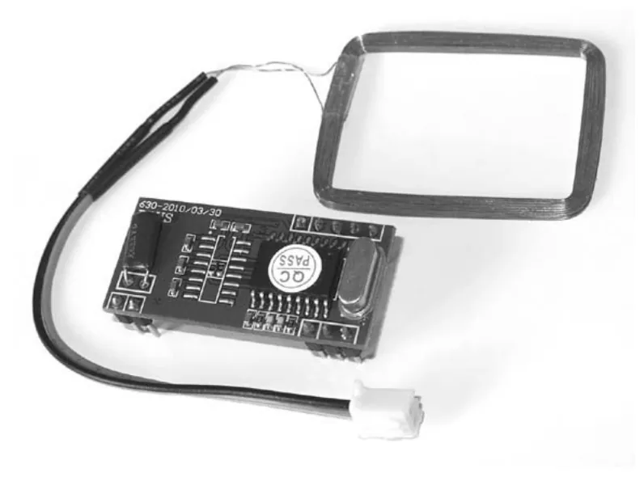

Inside an RFID device is a tiny integrated circuit with memory that can be accessed by a specialized reader. Most tags don’t have a battery inside; instead, they’re powered by energy from an electromagnetic field produced by the RFID reader. This field is transmitted by a fine coil of wire, which also acts as the antenna for the transmission of data between the card and the reader. Figure 16-2 shows the antenna coil of the RFID reader that we’ll use in this chapter.

The card reader we’ll use in this chapter is available from Seeed Studio at http://www.seeedstudio.com/, part number ELB149C5M. It’s cheap and easy to use, and it operates at 125 kHz; be sure to purchase RFID tags that match that frequency, such as Seeed Studio part number RFR103B2B.